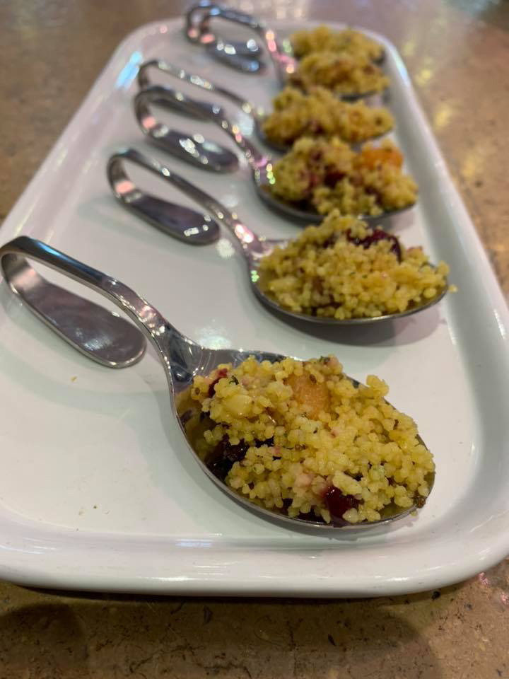
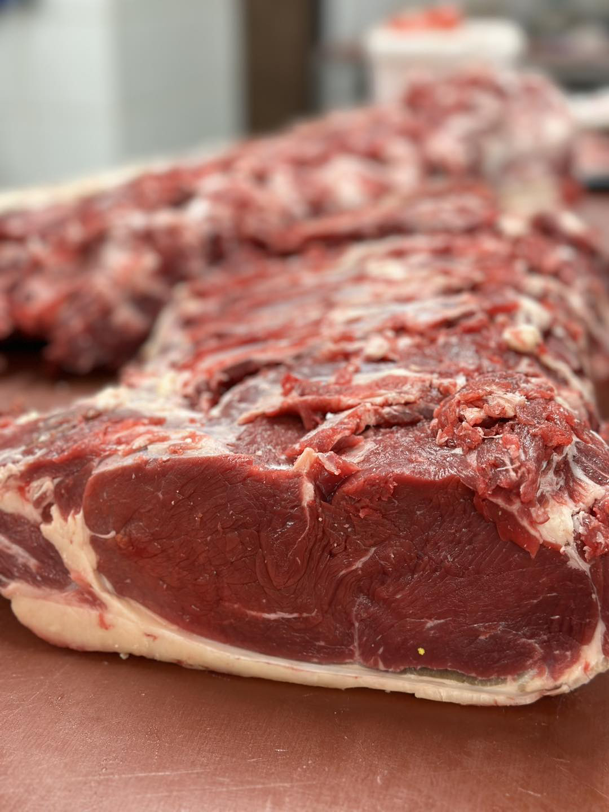
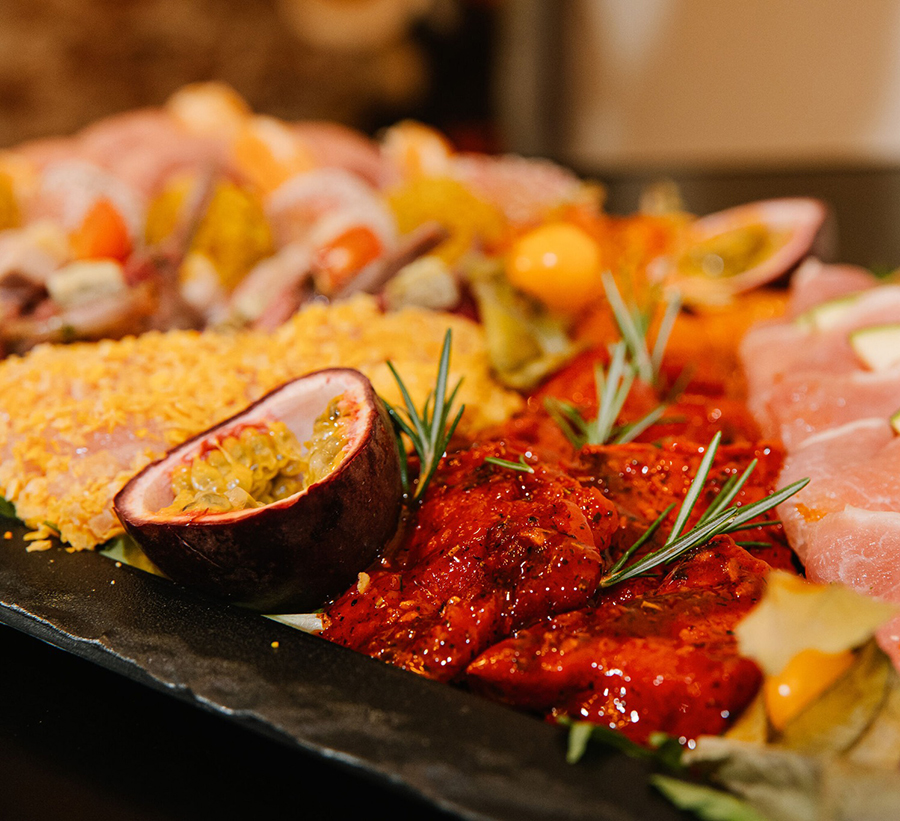
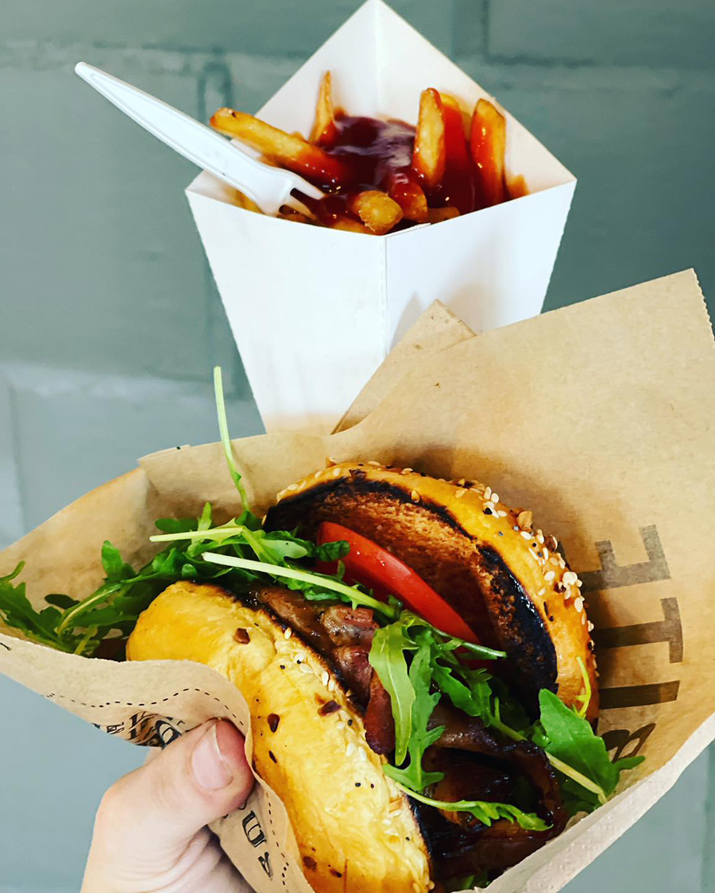

Ambachtelijke Slagerij uit Kortrijk
Vers, eerlijk en ambachtelijk — sinds generaties
Wat wij doen
Van verse vleeswaren tot complete catering voor uw evenement — wij staan voor u klaar.

Ons uitgebreid assortiment vlees, worst en vleeswaren — altijd vers en ambachtelijk bereid. Onze beroemde kaasburgers zijn een echte specialiteit.

Van intiem diner tot groot evenement — Brenda en haar team zorgen voor een totaalconcept op maat. Themafeesten, walkingdinners en meer.

Onze foodtruck staat klaar voor privé-evenementen en festivals. Hamburgers van rund, varken en kip — alles op het betere grillwerk.
Ons verhaal
Slagerij Floryn is een trots familiebedrijf in het hart van Kortrijk. Wij werken altijd met de meest verse producten en spelen graag in op de wensen van onze klanten. Bij ons is de klant écht koning.
Onze grote specialiteit zijn onze kaasburgers, die bekend staan om hun smaak en kwaliteit. Sommige recepten komen nog van mijn grootvader — ambacht en traditie staan centraal.
Sinds 2017 breiden wij uit met een cateringservice, en sinds 2020 hebben wij ook een foodtruck. Altijd met hetzelfde engagement: heerlijke, eerlijke en artisanale producten.
Waarom wij
Wij werken zoveel mogelijk met artisanale producten, sommige nog volgens recepten van grootvader.
We werken zo vers mogelijk — geen onnodige bewaring, pure smaak.
Onze medewerkers worden uitgekozen met een hart voor het vak en passie voor kwaliteit.
Bij ons bent u geen nummer. De klant is koning en wij luisteren naar uw wensen.
Vragen
Maandag, dinsdag, vrijdag & zaterdag: 7u00 – 13u00 en 14u00 – 19u00 (zaterdag tot 18u00). Woensdag: 7u00 – 13u00. Zon- en feestdagen: 8u00 – 12u30.
Zeker! Wij bieden een totaalconcept voor catering: walkingdinners, themafeesten, privé-evenementen en meer. Neem contact op voor een offerte op maat.
Onze kaasburgers zijn legendarisch in de regio Kortrijk. Ze staan bekend om hun smaak en kwaliteit — u moet ze zeker proberen!
Onze zaak ligt aan de Doorniksewijk 147 in Kortrijk. Er is voldoende parkeergelegenheid in de buurt.
Ja! Onze foodtruck is beschikbaar voor privé-evenementen, bedrijfsfeesten en festivals. We bieden hamburgers, steaksandwiches, kip en worst — altijd op het betere grillwerk.
Contact
Kom langs in onze zaak in Kortrijk of neem contact op voor meer informatie. Wij helpen u graag verder.